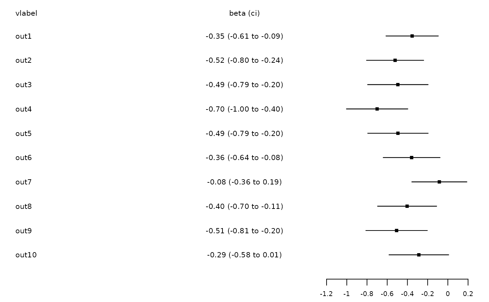
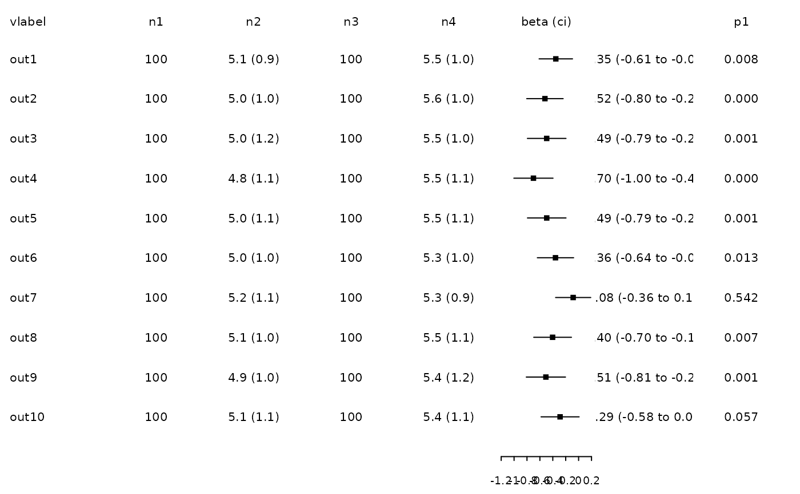
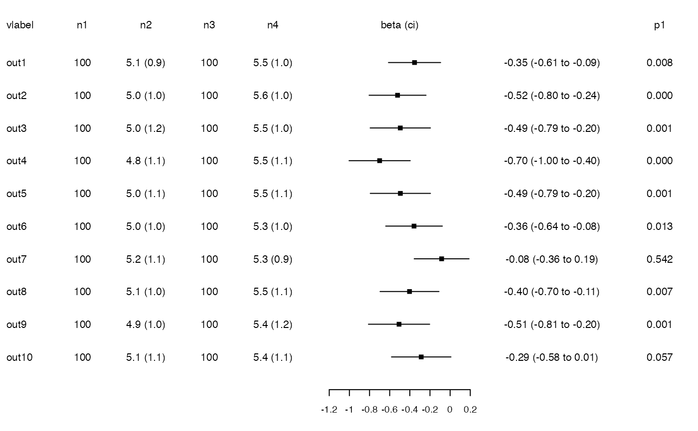
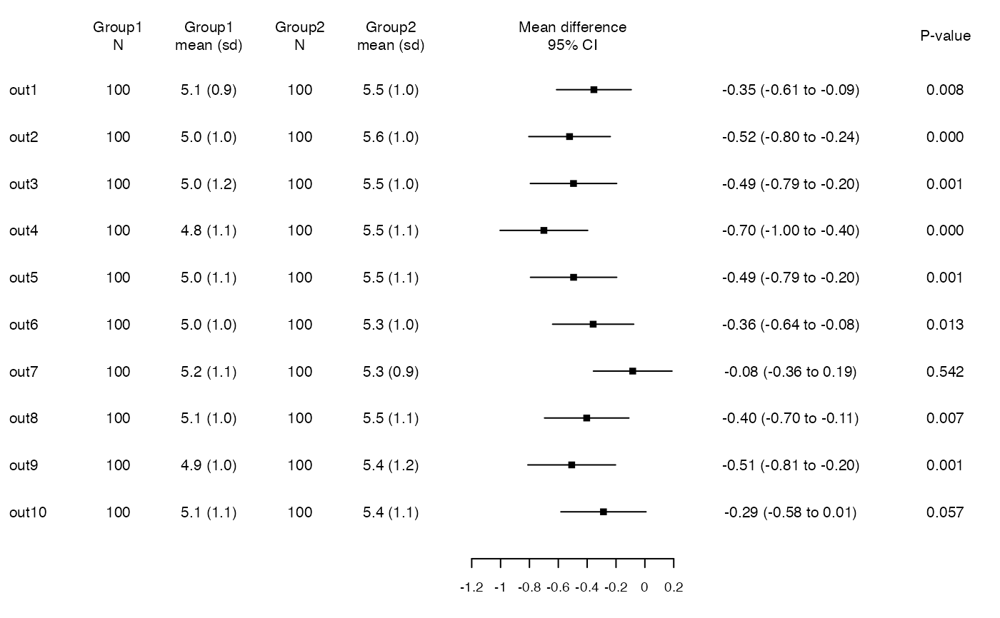
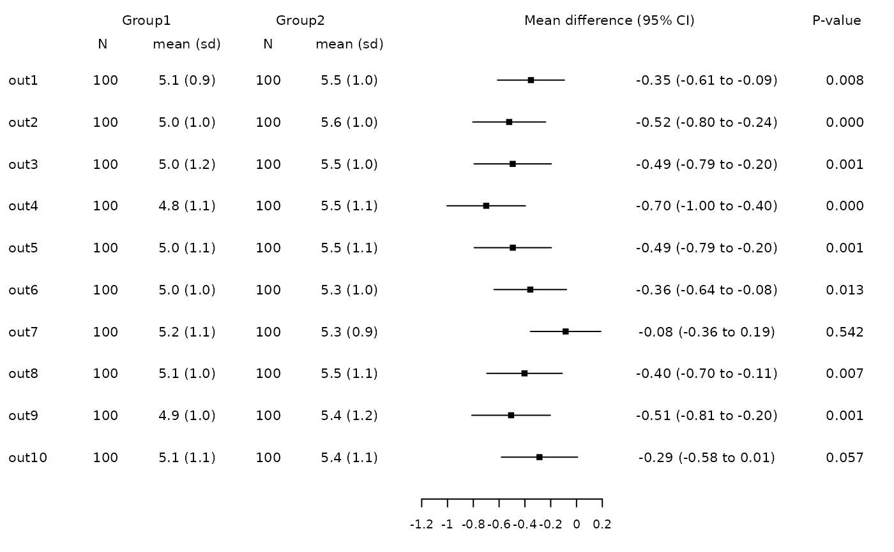
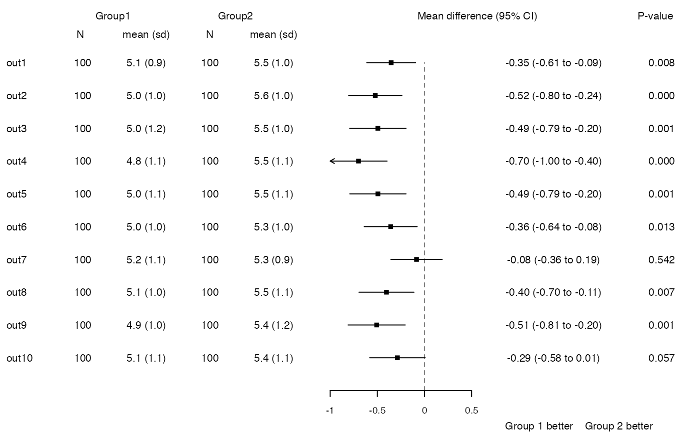
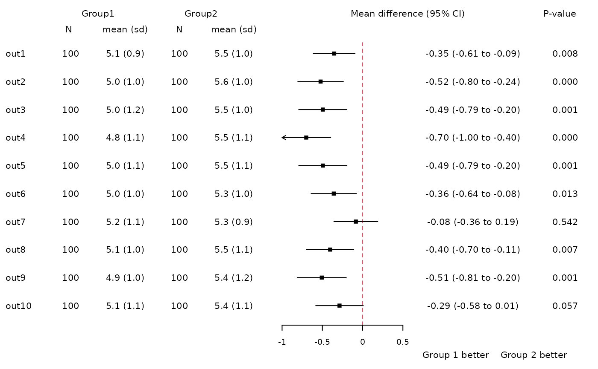
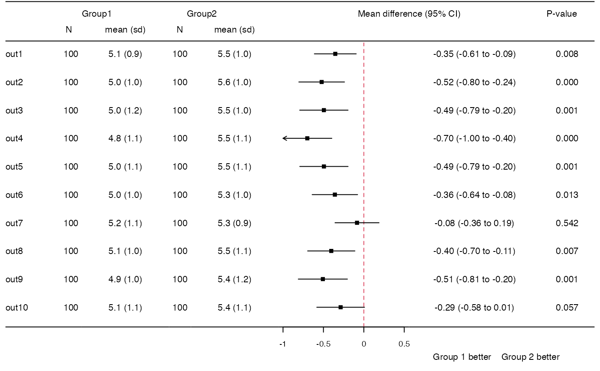
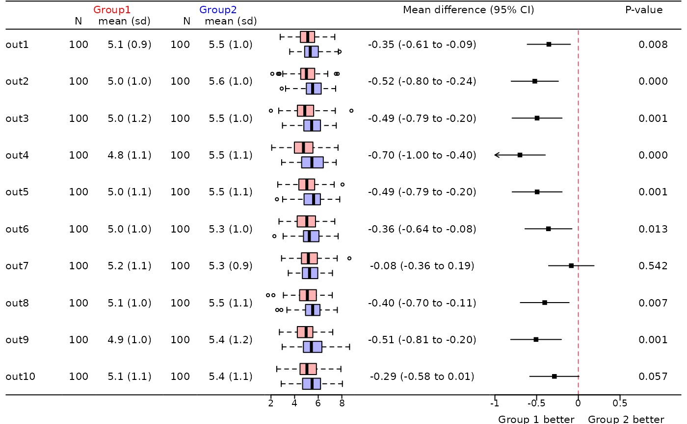
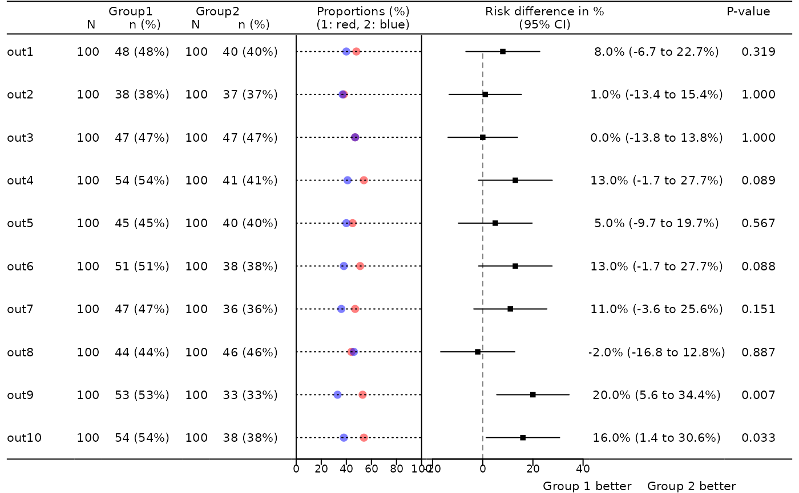

This function is deprecated. We recommend using genfobj and friends instead
Usage
fplot(
dat,
nrows = 1,
ncols = NA,
nns = NA,
lheights = c(0.1, 1, 0.05),
lwidths = NA,
y.at = NA,
font = NA,
arrow = TRUE,
arrow_length = 0.05,
arrow_angle = 30,
cap_length = 0,
shift_label_col = 0,
center_label_col = NA,
shift_textbeta_col = 0,
shift_ymax = 0,
shift_ymin = 0,
xlim = NA,
xlab = NA,
xlab_text = NA,
plim = NA,
plab = NA,
plab_text = NA,
xlab_cex = 0.6,
xlab_line = 0,
tck = -0.04,
shift_xaxis = 0,
xtitle = NA,
lwd = 1,
pcol = rgb(0.1, 0.1, 0.1, 0.2),
lscale = FALSE,
ps = NA,
prps = NA,
header = NA,
ref = list(x = NA, extend = 0, lty = 2, col = "grey50", lwd = lwd),
bottomline = NA,
headline = NA,
headline_pos = c(0, 1),
sideline = FALSE,
bpdat = NULL,
bpopt = NA,
bplim = NA,
bplab = NA,
bplab_text = NA,
beta2 = NULL,
xlab2 = NA,
xlab_text2 = NA,
xlim2 = NA,
xtitle2 = NA,
...
)Arguments
- dat
data frame with variables called vlabel (labels), nx with x=1,2,... (num or chr columns with strings, e.g. number of observations or descriptives), beta, beta_lci, beta_uci (num columns with point estimates and confidence interval) optionally beta_format (num or chr column with formatted text to be printed along forest, generated from beta if not given) px with x=1,2,.. (num or chr columns with p-value(s)) propx with x=1,2,.. (num columns with proportion in the groups, generates simple scatter plot)
- nrows
number of rows, setting for layout, default is 1
- ncols
number of columns, setting for layout, typically derived from the data
- nns
number of n columns, derived from data if not given
- lheights
lheights: relative height of rows, length is typically 3 (header, data ,footer)
- lwidths
lwidths: relative width of columns, length correpsonds to columns in forest plus 2 (left and right margin)
- y.at
position of lines, 1:nrow(dat) by default
- font
font for variable vlabel, length has to correspond to rows of dat, default is rep(1,nrow(dat))
- arrow
logical, whether to use arrows if xlim does not include confidence interval limits
- arrow_length
length of the edges of the arrow head (in inches)
- arrow_angle
angle from the shaft of the arrow to the edge of the arrow head
- cap_length
length of the confidence interval cap, 0 if none
- shift_label_col
inset of labels in the first column, default is 0
- center_label_col
centering of label in first column
- shift_textbeta_col
inset of formatted effects (beta_format)
- shift_ymax
down-shift of maximal y-value, smaller space to top
- shift_ymin
up-shift of minimal y-value, smaller space to bottom
- xlim
limits for x-axis in forest plots, derived from beta by default
- xlab
position of labels for x-axis, derived from beta by default
- xlab_text
text at the labels, derived from beta by default
- plim
limits for x-axis of the proportion scatterplot (if any), c(0,1) by default
- plab
position of labels for x-axis of the proportion scatterplot (if any), pretty(plim) by default
- plab_text
text at the labels, 100*plab by default (percentages from proportion)
- xlab_cex
size of x-axis labels (not title)
- xlab_line
position of x-axis label (not title)
- tck
x-axis tick length
- shift_xaxis
shift position of x-axis
- xtitle
x axis title and format, list with x (xpos), y (ypos), textr and textl (text at the right/left side), cex (text size)
- lwd
line widths
- pcol
color if symbols are used, not active
- lscale
logicial, beta given on log scale, use exp to format beta, default is FALSE
- ps
points for plot, list with pch, cex, and col
- prps
points for proportion scatterplot, list with pch, cex, and col
- header
for table, either a character vector or a list with any of x (vector with xpos), y (single y-position), text (character vector with labels), cex (text size), col (text colour), the list can be >1 to define more than one header line
- ref
reference line, list with x (xposition), extend (extension on top), lty (line type), col (line color), lwd (line width)
- bottomline
line at the bottom if not NA
- headline
line for header if not NA, 1 for one line at the bottom, 2 for a line at the bottom and top
- headline_pos
vector with position of lower and upper headline (if applicable), default c(0,1)
- sideline
logical, whether to show lines at the side of the proportion scatterplot
- bpdat
Optional data frame in a long format used to generate boxplots, must have columns value (the outcome value), variable (the outcome variable, safest as a factor to preserve the order in the plot), and arm (the treatment arm, safest as a factor to preserve the order in the plot)
- bpopt
List of options to pass to boxplot, with elements "col" and "boxwex"
- bplim
limits for x-axis of the boxplot (if any), c(min,max) by default
- bplab
position of labels for x-axis of the boxplot (if any), pretty(bplim) by default
- bplab_text
text at the labels, bplab by default
- beta2
if not NULL a second forest is generated, needs variables beta2, beta_lci2 and beta_uci2 in dat
- xlab2
see xlab for 2nd forest
- xlab_text2
see xlab_text for 2nd forest
- xlim2
see xlim for 2nd forest
- xtitle2
see xtitle for 2nd forest
- ...
options passed to ff_ci for formatting the effects (if beta_format not given)
Examples
data(forplotdata)
# Minimal example
fplot(dat=forplotdata[,c("vlabel","beta","beta_lci","beta_uci")])
# Standard example
fplot(dat=forplotdata)

# Set widths and heights
lwidths<-c(0.05,0.5,0.2,0.8,0.2,0.8,1.2,1.2,0.5,0.05)
lheights<-c(0.14,1,0.08)
fplot(dat=forplotdata,lwidths=lwidths,lheights=lheights)

# Include header:
header<-c("","Group1\nN","Group1\nmean (sd)","Group2\nN","Group2\nmean (sd)",
"Mean difference\n95% CI","","P-value")
fplot(dat=forplotdata,lwidths=lwidths,lheights=lheights,header=header)

header<-list(list(y=0.7,
text=c("Group1","Group2","Mean difference (95% CI)","P-value"),
x=c(0.10,0.32,0.7,0.98)),
list(y=0.3,text=c("N","mean (sd)","N","mean (sd)"),
x=c(0.07,0.18,0.28,0.38)))
fplot(dat=forplotdata,header=header,lwidths=lwidths,lheights=lheights)

# Reference line and xlim
xtitle<-list(x=0.86,y=0.2,textl="Group 1 better ",textr=" Group 2 better")
fplot(dat=forplotdata,header=header,lwidths=lwidths,lheights=lheights,
xtitle=xtitle,ref=list(x=0),xlim=c(-1,0.5))

# Shift x-axis, labels and title
xtitle<-list(x=0.86,y=0.6,textl="Group 1 better ",textr=" Group 2 better")
fplot(dat=forplotdata,header=header,lwidths=lwidths,lheights=lheights,
ref=list(x=0,col=2,extend=2),
xtitle=xtitle,xlim=c(-1,0.5),shift_xaxis=0.3,xlab_line=-0.8)

# Lines at header and bottom
fplot(dat=forplotdata,header=header,lwidths=lwidths,lheights=lheights,
ref=list(x=0,col=2,extend=2),
xtitle=xtitle,xlim=c(-1,0.5),shift_xaxis=0.3,xlab_line=-0.8,
headline=2,bottomline=1)

#Add boxplot for continuous outcomes
lwidths<-c(0.05,0.5,0.3,0.6,0.3,0.6,0.8,1.2,1.2,0.5,0.05)
lheights<-c(0.08,1,0.04)
header<-list(list(y=0.7,
text=c("Group1","Group2","Mean difference (95% CI)","P-value"),
x=c(0.10,0.3,0.7,0.98),col=c("red","blue","black","black")),
list(y=0.3,text=c("N","mean (sd)","N","mean (sd)"),
x=c(0.07,0.15,0.25,0.32)))
xtitle<-list(x=0.88,y=0.3,textl="Group 1 better ",textr=" Group 2 better")
fplot(dat=forplotdata,header=header,lwidths=lwidths,lheights=lheights,
ref=list(x=0,col=2,extend=2),
xtitle=xtitle,xlim=c(-1,0.5),shift_ymin=0.5, shift_xaxis=0.5,xlab_line=-1,
headline=2,bottomline=1,
bpdat=forplotdata_bp)

#Add a scatterplot for proportions
data(forplotdata)
lwidths<-c(0.05,0.5,0.2,0.6,0.2,0.6,1.0,1.2,1.0,0.5,0.05)
lheights<-c(0.08,1,0.04)
header<-list(list(y=0.7,
text=c("Group1","Group2","Proportions (%)","Risk difference in %","P-value"),
x=c(0.10,0.25,0.45,0.7,0.98)),
list(y=0.3,text=c("N","n (%)","N","n (%)","(1: red, 2: blue)", "(95% CI)"),
x=c(0.07,0.15,0.22,0.30,0.45,0.7)))
xtitle<-list(x=0.83,y=0.4,textl="Group 1 better ",textr=" Group 2 better")
prps<-list(list(pch=16,cex=1.5,col=rgb(1,0,0,0.5)),
list(pch=16,cex=1.5,col=rgb(0,0,1,0.5)))
fplot(dat=forplotdata_prop,lwidths=lwidths,lheights=lheights,
header=header,
prps=prps,
xtitle=xtitle,ref=list(x=0),
xlab_line=-1.0,xlab=c(-0.2,0,0.2,0.4), xlab_text=c(-20,0,20,40),
headline=2,bottomline=1,sideline=TRUE,
shift_ymin=0.5, shift_xaxis=0.5)

